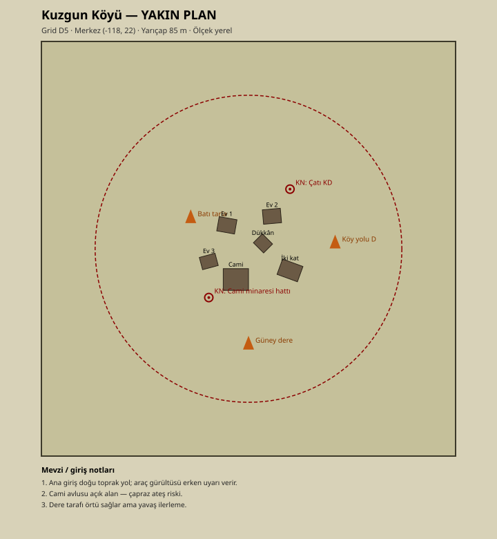

Kuzgun Köyü

Kuzgun Köyü
| Alan | Değer |
|---|---|
| Grid | D5 |
| Tür | Village |
| Ganimet | Medium |
| Merkez (x, z) | -118, 22 |
| Radius / Flatten | 85 m / 60 m |
| Major | Evet |
| Yakın plan | ../YakinPlanlar/kuzgun-koyu-yakin-plan.svg |

Özet
Vadi ortası ana köy; orta ganimet, erken–orta oyun toplanma ve köprü yaklaşımı.
Arazi ve yapılar
Dere batısında düzleşmiş zemin. Taş evler, cami, iki katlı yapı. Doğu girişi toprak yol.
Saldırı
- Doğu köy yolundan kama. 2) Güney dere örtüsüyle kanat. 3) Batı tarladan yalnızca dumanla — açık alan.
Savunma
İki kat çatı KD bakış; cami avlusunu boş bırak, kanatlardan tut. Araç sesini doğu yolda dinle.
Keskin nişancı / baskın noktaları
Çatı KD; cami minaresi hattı (tasarım).
Ganimet notu
Medium — tüfek/zırh dengeli.
Yol ve bağlantılar
Yamaç Yolu (B2 köprüsü), Ana Yol, Röle Yolu başlangıcı.
İntikal sektörü
S1 / S5 yaklaşımı; S6’ya uzak.
Telsiz çağrı örneği
“D5 Kuzgun Köyü — tim hazır.”